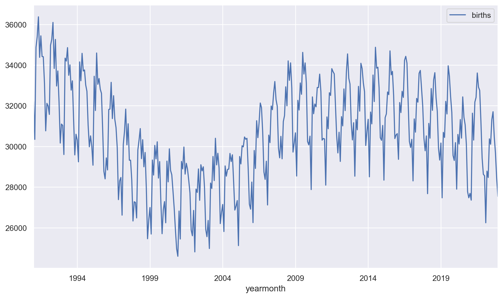
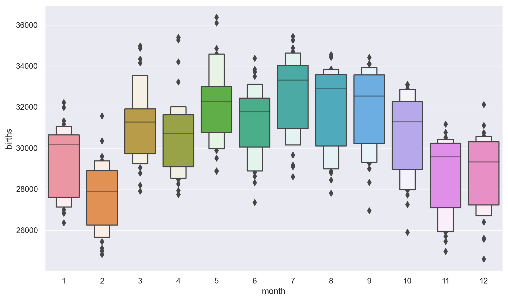
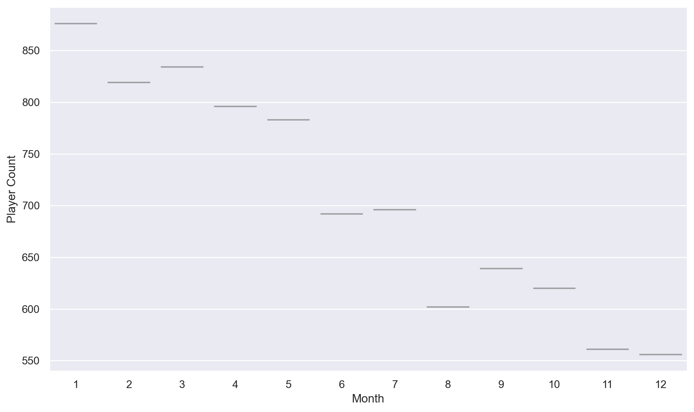
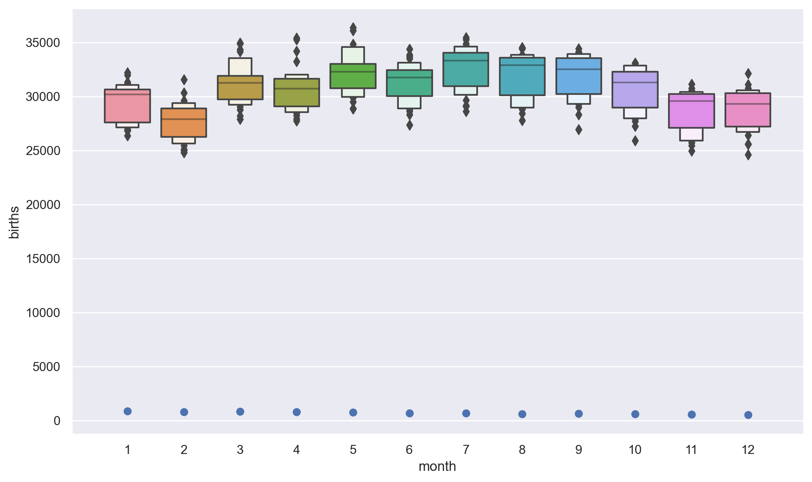
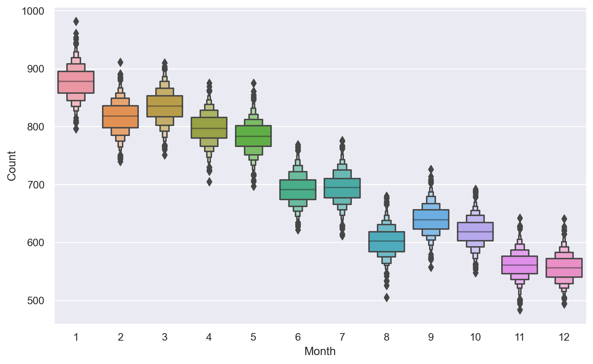
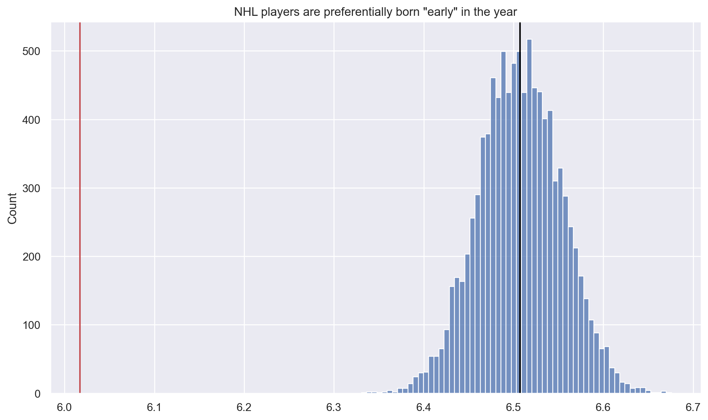

import datetime
import warnings
import matplotlib as mpl
import matplotlib.pyplot as plt
import numpy as np
import pandas as pd
import seaborn as sns
from matplotlib.ticker import FuncFormatter
from pandas.plotting import register_matplotlib_converters
register_matplotlib_converters()
sns.set()
sns.set_context("notebook")
plt.rcParams["figure.figsize"] = 10, 6
pd.options.display.max_columns = None
pd.options.display.max_rows = None
pd.options.display.precision = 4
warnings.simplefilter(action="ignore", category=FutureWarning)
dollar_formatter = FuncFormatter(lambda x, pos: f"${x:,.0f}")
thousands_formatter = FuncFormatter(lambda x, pos: f"{x:,.0f}")core
Fill in a module description here
Imports
Data
canada_births_1991_2022 = pd.read_csv(
"https://raw.githubusercontent.com/rfordatascience/tidytuesday/master/data/2024/2024-01-09/canada_births_1991_2022.csv"
)
nhl_player_births = pd.read_csv(
"https://raw.githubusercontent.com/rfordatascience/tidytuesday/master/data/2024/2024-01-09/nhl_player_births.csv"
)
nhl_rosters = pd.read_csv(
"https://raw.githubusercontent.com/rfordatascience/tidytuesday/master/data/2024/2024-01-09/nhl_rosters.csv"
)
nhl_teams = pd.read_csv(
"https://raw.githubusercontent.com/rfordatascience/tidytuesday/master/data/2024/2024-01-09/nhl_teams.csv"
)nhl_rosters['season'].value_counts()season
20212022 1212
20222023 1161
20032004 1128
20182019 1099
20022003 1093
20202021 1078
20012002 1075
20002001 1073
20052006 1068
20172018 1067
20152016 1067
20142015 1065
20112012 1060
20102011 1059
20132014 1058
20082009 1055
20162017 1053
20192020 1053
20092010 1049
20062007 1041
19992000 1035
19981999 1028
20072008 1010
19951996 993
19931994 987
20122013 984
19971998 944
19961997 944
19941995 895
19911992 884
19921993 857
19901991 821
19881989 809
19871988 807
20232024 798
19891990 795
19851986 754
19811982 745
19831984 743
19861987 742
19791980 709
19821983 709
19841985 707
19801981 702
19741975 560
19771978 558
19781979 532
19761977 532
19751976 526
19731974 485
19721973 438
19701971 431
19711972 428
19681969 352
19691970 346
19671968 345
19341935 200
19331934 195
19651966 193
19361937 189
19301931 187
19321933 184
19501951 182
19661967 179
19351936 179
19641965 178
19631964 175
19371938 174
19491950 172
19541955 172
19291930 170
19571958 167
19601961 167
19411942 167
19521953 163
19381939 163
19471948 162
19281929 162
19261927 162
19431944 161
19511952 160
19271928 159
19531954 158
19621963 158
19591960 157
19391940 156
19311932 156
19551956 154
19611962 153
19461947 153
19401941 152
19561957 151
19481949 150
19581959 148
19421943 147
19451946 141
19441945 141
19251926 110
19241925 91
19231924 54
19191920 51
19171918 51
19201921 49
19211922 49
19221923 45
19181919 37
Name: count, dtype: int64Functions
def filter_players(df, nationality):
"""
Filter players based on nationality.
Parameters:
- df (DataFrame): The input dataframe containing player information.
- nationality (str): The nationality to filter by. Use "CAN" for Canadian players, or leave empty for no filter.
Returns:
- filtered_df (DataFrame): The filtered dataframe based on the nationality.
"""
if nationality == "CAN":
return df[df["birth_country"] == "CAN"]
elif nationality == "":
return df
else:
return df[df["birth_country"] != "CAN"]
def linear_weight(month):
"""
Calculate the linear weight for a given month.
Parameters:
- month (int): The month for which to calculate the weight.
Returns:
- weight (int): The linear weight for the given month.
"""
# Assuming month is an integer from 1 (January) to 12 (December)
return month
def logistic_weight(month, midpoint=6.5, growth_rate=1, max_value=12):
"""
Calculate the logistic weight for a given month.
Parameters:
- month (int): The month for which to calculate the weight.
- midpoint (float): The midpoint of the logistic function. Default is 6.5.
- growth_rate (float): The growth rate of the logistic function. Default is 1.
- max_value (float): The maximum value of the logistic function. Default is 12.
Returns:
- weight (float): The logistic weight for the given month.
"""
return max_value / (1 + np.exp(-growth_rate * (month - midpoint)))
def calculate_metric(birth_months, weight_function):
"""
Calculate a metric based on the birth months and a weight function.
Parameters:
- birth_months (list): A list of birth months.
- weight_function (function): The weight function to use for calculating the metric.
Returns:
- metric (float): The calculated metric.
"""
weighted_sum = sum(weight_function(month) for month in birth_months)
return weighted_sum / len(birth_months)
def raw_to_cleaned_canada(df_):
"""
Clean the raw Canada birth dataframe.
Parameters:
- df_ (DataFrame): The raw Canada birth dataframe.
Returns:
- cleaned_df (DataFrame): The cleaned Canada birth dataframe with a new "yearmonth" column.
"""
return df_.assign(yearmonth=pd.to_datetime(df_[["year", "month"]].assign(day=1)))
def raw_to_cleaned_nhl_player_births(df_):
"""
Clean the raw NHL player births dataframe.
Parameters:
- df_ (DataFrame): The raw NHL player births dataframe.
Returns:
- cleaned_df (DataFrame): The cleaned NHL player births dataframe with a new "birth_date" column.
"""
return df_.assign(birth_date=pd.to_datetime(df_["birth_date"]))
def simulate_player_birth_skew(n_players=100, n_simulations=10):
"""
Simulate the player birth skew by randomly selecting birth months based on the Canadian birth rate.
Parameters:
- n_players (int): Number of players to simulate. Default is the size of nhl_player_births.
- n_simulations (int): Number of simulations to run. Default is 10.
Returns:
- weights (ndarray): An array containing the calculated metric for each simulation.
"""
# Initialize an empty list to store the calculated metric for each simulation
weights = []
# Run the simulations
for sim in range(n_simulations):
# Randomly select birth months based on the Canadian birth rate
birth_months = np.random.choice(
canadian_births_percentage.index,
p=canadian_births_percentage.values / 100,
replace=True,
size=n_players,
)
# Calculate the metric using the linear weight function
weight = calculate_metric(birth_months, linear_weight)
# Append the calculated metric to the list
weights.append(weight)
return np.array(weights)canadian_players_by_birth = filter_players(nhl_player_births, nationality="CAN")
noncanadian_players_by_birth = filter_players(nhl_player_births, nationality="non Canadian")
all_players_by_birth = filter_players(nhl_player_births, nationality="")
clean_canada_births = raw_to_cleaned_canada(canada_births_1991_2022)
clean_nhl_player_births = raw_to_cleaned_nhl_player_births(nhl_player_births)
canadian_births_percentage = (
clean_canada_births.groupby("month")["births"].sum()
/ clean_canada_births["births"].sum()
* 100.0
)EDA
n_players = nhl_player_births["player_id"].nunique()Plots
What does the birth rate for Canadians look like (agg monthly)?
fig, ax = plt.subplots(figsize=(10, 6))
fig.patch.set_facecolor("w")
clean_canada_births.plot(x="yearmonth", y="births", ax=ax)
fig.tight_layout()
clean_canada_births.head()| year | month | births | yearmonth | |
|---|---|---|---|---|
| 0 | 1991 | 1 | 32213 | 1991-01-01 |
| 1 | 1991 | 2 | 30345 | 1991-02-01 |
| 2 | 1991 | 3 | 34869 | 1991-03-01 |
| 3 | 1991 | 4 | 35398 | 1991-04-01 |
| 4 | 1991 | 5 | 36371 | 1991-05-01 |
clean_canada_births.tail()| year | month | births | yearmonth | |
|---|---|---|---|---|
| 379 | 2022 | 8 | 31706 | 2022-08-01 |
| 380 | 2022 | 9 | 30472 | 2022-09-01 |
| 381 | 2022 | 10 | 29671 | 2022-10-01 |
| 382 | 2022 | 11 | 28428 | 2022-11-01 |
| 383 | 2022 | 12 | 27540 | 2022-12-01 |
# Check if the sum of Canadian births percentage is close to 100
assert np.isclose(canadian_births_percentage.sum(), 100.0)What does the monthly birth rate for Canadians look like?
fig, ax = plt.subplots(figsize=(10, 6))
fig.patch.set_facecolor("w")
sns.boxenplot(data=clean_canada_births, ax=ax, x="month", y="births")
fig.tight_layout()
What does the monthly birth rate for NHL players look like?
clean_nhl_player_births.head()[["player_id", "birth_month"]]| player_id | birth_month | |
|---|---|---|
| 0 | 8467867 | 3 |
| 1 | 8445176 | 9 |
| 2 | 8460014 | 4 |
| 3 | 8460510 | 5 |
| 4 | 8459596 | 8 |
g = clean_nhl_player_births.groupby(["birth_month"]).count()["player_id"]month_counts = clean_nhl_player_births["birth_month"].value_counts().sort_index()month_counts
# Create a DataFrame for plotting
plot_data = pd.DataFrame(
{"Month": month_counts.index, "Player Count": month_counts.values}
)
# Create the boxenplotfig, ax = plt.subplots(figsize=(10, 6))
fig.patch.set_facecolor("w")
sns.boxenplot(x="Month", y="Player Count", data=plot_data, ax=ax)
# ax.xaxis.set_major_formatter(dollar_formatter)
fig.tight_layout()
fig, ax = plt.subplots(figsize=(10, 6))
fig.patch.set_facecolor("w")
sns.boxenplot(data=clean_canada_births, ax=ax, x="month", y="births")
ax.scatter(g.index - 1, g)
fig.tight_layout()
# Number of bootstrap iterations
n_iterations = 1000
# List to store bootstrap samples
bootstrap_samples_list = []
for i in range(n_iterations):
# Sample the entire dataset with replacement
sample = clean_nhl_player_births.sample(frac=1, replace=True)
# Count the number of players for each month in the sample
month_counts = sample["birth_month"].value_counts().sort_index()
# Store the counts with the month information
for month in month_counts.index:
bootstrap_samples_list.append({"Month": month, "Count": month_counts[month]})
# Concatenate all samples into a DataFrame
bootstrap_samples = pd.concat(
[pd.DataFrame([sample]) for sample in bootstrap_samples_list], ignore_index=True
)
# Now plot the data
sns.boxenplot(x="Month", y="Count", data=bootstrap_samples)
plt.show()
NHL players are preferentially born “early” in the year
Define early in the year
Each month gets its numerical value as it’s “weight”. January -> 1, December -> 12.
Create a metric
A linear weighting of the months that appear in a data set.
Simulate
I will draw from the NHL players roster; and I will randomly draw from the general Canadian population birth month distribution. Do this process 10,000 times. Create a distribution of the metric.
Compare
Visualize
weights = simulate_player_birth_skew(
n_players=canadian_players_by_birth["player_id"].nunique(), n_simulations=1000
)# todo add test that early and late years have different metric values
assert calculate_metric(np.random.randint(1, 8, size=100), linear_weight) < 6.5
assert calculate_metric(np.random.randint(5, 12, size=100), linear_weight) > 6.5weights = simulate_player_birth_skew(
n_players=canadian_players_by_birth["player_id"].nunique(), n_simulations=10_000
)fig, ax = plt.subplots(figsize=(10, 6))
fig.patch.set_facecolor("w")
sns.histplot(weights, ax=ax)
ax.axvline(
calculate_metric(canadian_players_by_birth["birth_month"], linear_weight),
color=sns.color_palette()[3],
)
ax.axvline(
np.average(weights), # if perfectly balanced
color='black',
)
ax.set_title(f'NHL players are preferentially born "early" in the year')
fig.tight_layout()
Plan: create a live dashboard with some kind of interactivity
- filter by Canadian born
- filter by ~Candian born
- don’t filter (all)
Don’t run for now
```{shinylive-python}
#| standalone: true
from shiny import *
app_ui = ui.page_fluid(
ui.input_slider("n", "N", 0, 100, 40),
ui.output_text_verbatim("txt"),
)
def server(input, output, session):
@output
@render.text
def txt():
return f"The value of n*2 is {input.n() * 2}"
app = App(app_ui, server)
```SyntaxError: invalid syntax (918194286.py, line 1)@output
@render.plot
def plot():
return fig
from pathlib import Path
import pandas
from shiny import App, render, ui
app_ui = ui.page_fluid(
ui.input_checkbox_group(
"checkbox_group",
"Birth Countries",
{
"born_canada": "Born in Canada",
"not_born_canada": "Not born in Canada",
},
),
)
def server(input, output, session):
@output
@render.table
def table():
infile = Path(__file__).parent / "mtcars.csv"
df = pandas.read_csv(infile)
# Use the DataFrame's to_html() function to convert it to an HTML table, and
# then wrap with ui.HTML() so Shiny knows to treat it as raw HTML.
return df
app = App(app_ui, server)from shiny import App, render, req, ui
app_ui = ui.page_fluid(
ui.input_checkbox_group(
"checkbox_group",
"Checkbox group",
{
"a": "A",
"b": "B",
"c": "C",
},
),
ui.output_text("value"),
)
def server(input, output, session):
@render.text
def value():
return ", ".join(input.checkbox_group())
app = App(app_ui, server)Reproduce the visual
Questions
- Should I exclusively look at NHL players born in Canada?
- Should I weight the overall Canada birth rate based on NHL player density?
- I think yes, and I can do it by sampling based on player’s birth year.
- Should I slice active players by season (year)? As in, over time is the effect changing?